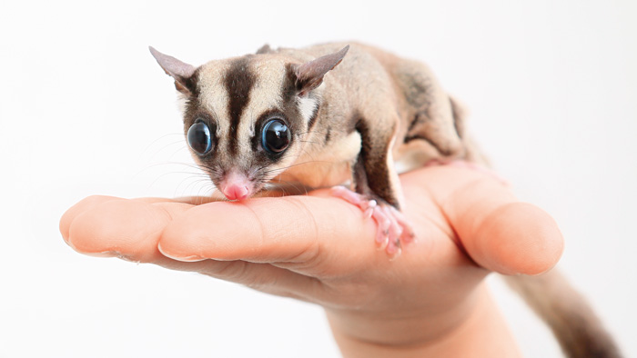

list1
- 產地
- 習性
- 新手須知
表格
| 保護狀況 | 無危 | |
| 特色 | 會自殘 | 會雄性禿 |
| 大重點 | 不是老鼠 | 是有袋類 |

蜜袋鼯的身體像鼬科，並有一條很長但不能抓東西的捲纏尾。雄鼯比雌鼯大，由鼻至尾巴長約9.5-12吋。牠們的毛皮很厚及柔軟，一般都呈藍灰色，但也有呈黃色、黃褐色或白色。由鼻至背部中間有一道黑間。牠們的腹部、喉嚨及胸部呈奶白色。 蜜袋鼯每腳有五趾，除了後腳的對趾外，每趾都有爪。後腳第二及第三趾是部份融合的。牠們最特別的是其翼膜，由第五指伸延至第一趾。當腳伸直時，翼膜就可以幫助牠們滑翔50-150米。牠們是利用翼膜的捲曲或移動腳及尾巴來控制滑翔。 蜜袋鼯的前額、胸部及泄殖腔有臭腺。雄鼯以臭腺來劃定地盤。雄鼯前額的臭腺很明顯，因為那地方是禿的。雄鼯的陰莖分叉。雌鼯腹部中央有育幼袋。